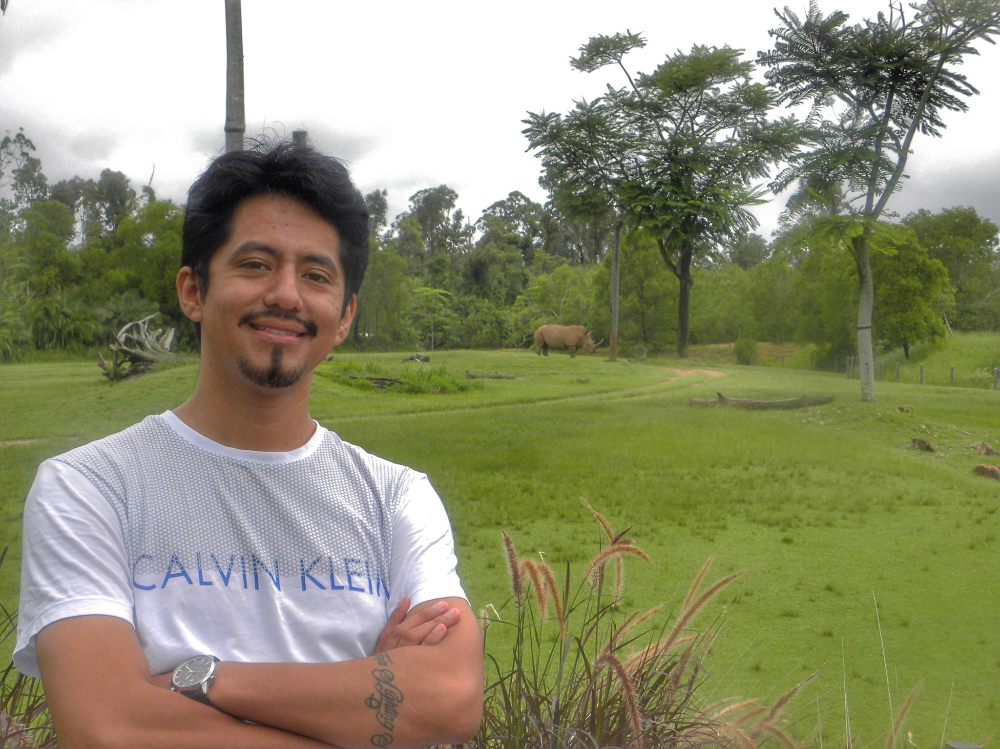
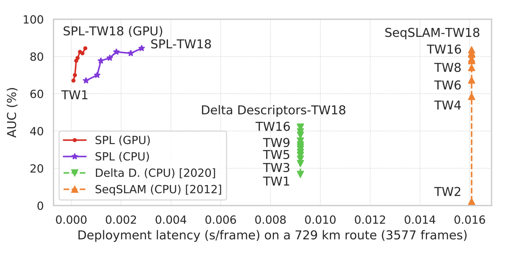
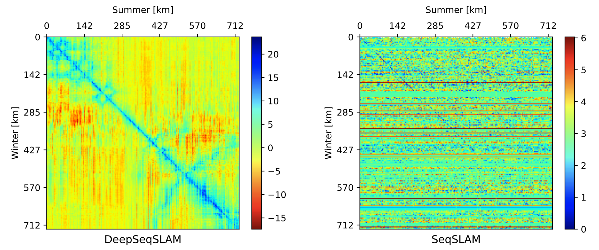
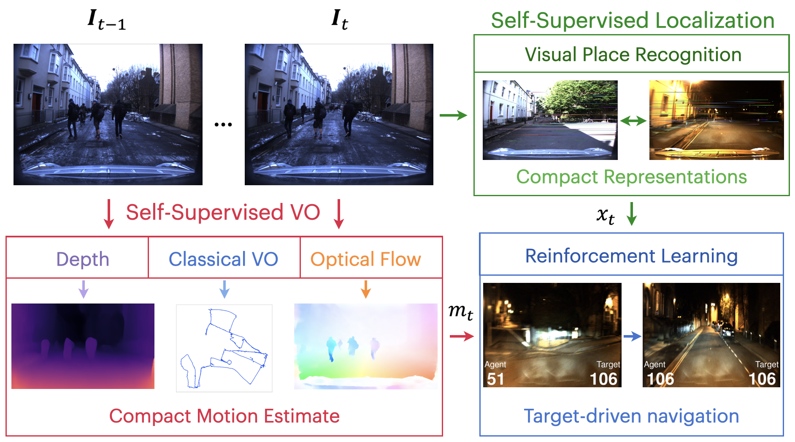

|
Marvin Chancán mchancanl at uni.pe I am completing a Ph.D. in electrical engineering and robotics at Queensland University of Technology, Australia, advised by Michael Milford. Previously, I received a B.Sc. in mechatronics engineering (1st in my class) from UNI in 2009, and an M.Sc. in applied control from PUC-Rio in 2012. Also, I worked in the automation and IT industries for many years in several countries of The Americas and Europe. |
 |
Google Scholar GitHub LinkedIn YouTube Twitter
|  | Sequential Place Learning: Heuristic-Free High-Performance Long-Term Place Recognition Marvin Chancán, Michael Milford arXiv:2103.02074, March 2021 Project page | ArXiv | Codebase |
|
|
MVP: Unified Motion and Visual Self-Supervised Learning for Large-Scale Robotic Navigation Marvin Chancán, Michael Milford arXiv:2003.00667, March 2020 Project page | ArXiv |
|  | DeepSeqSLAM: A Trainable CNN+RNN for Joint Global Description and Sequence-based Place Recognition Marvin Chancán, Michael Milford Machine Learning for Autonomous Driving Workshop at the 34th Conference on Neural Information Processing Systems (NeurIPS 2020) Project page | Video | Code |
|  | Robot Perception enables Complex Navigation Behavior via Self-Supervised Learning Marvin Chancán, Michael Milford Self-Supervised Robot Learning Workshop at the Robotics: Science and Systems XVI (RSS 2020) Project page | Video | ArXiv |

|
CityLearn: Diverse Real-World Environments for Sample-Efficient Navigation Policy Learning Marvin Chancán, Michael Milford IEEE International Conference on Robotics and Automation (ICRA 2020) Project page | Video | Code |

|
A Hybrid Compact Neural Architecture for Visual Place Recognition Marvin Chancán, Luis Hernandez-Nunez, A. Narendra, Andrew B. Barron, Michael Milford IEEE Robotics and Automation Letters (RA-L) Presented at ICRA 2020 Project page | Video | Code |
|